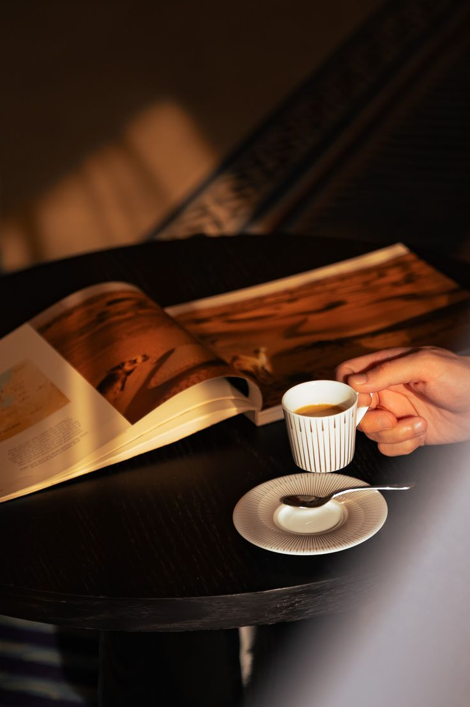
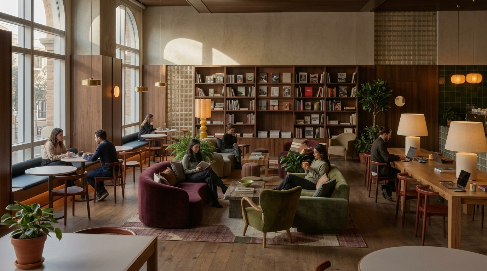
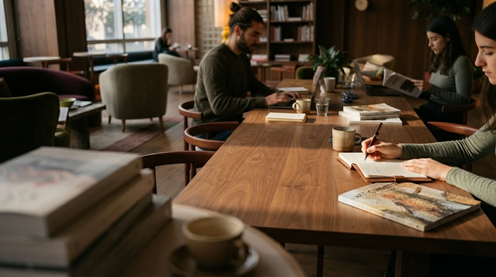
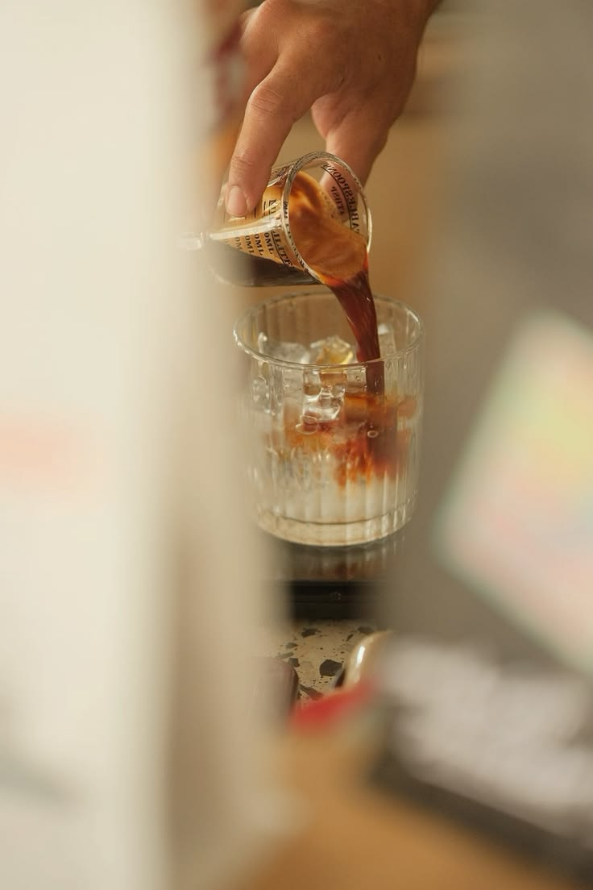

el archivo

( la memoria )
Las publicaciones de NOUR permanecen disponibles y pasan a formar parte del espacio.
Muchos lugares están construidos alrededor de la rapidez, la rotación y el consumo.
¿y si no?
NOUR nace desde una idea
distinta:
crear un lugar donde
permanecer también tenga valor.
NUESTROS PILARES

( la memoria )
Las publicaciones de NOUR permanecen disponibles y pasan a formar parte del espacio.

( el refugio )
Un lugar pensado para que diferentes formas de estar puedan convivir.

( el pulso )
Ocasiones para volver, compartir y construir vínculo con el espacio.

EL CAFÉ
NOUR sigue siendo una cafetería. El café es la base cotidiana del espacio: la razón sencilla para entrar y el punto desde el que pueden aparecer todas las demás capas.
un café puede durar diez minutos.
o toda una tarde.
lo demás
viene después.
aunque solo sea
estar.